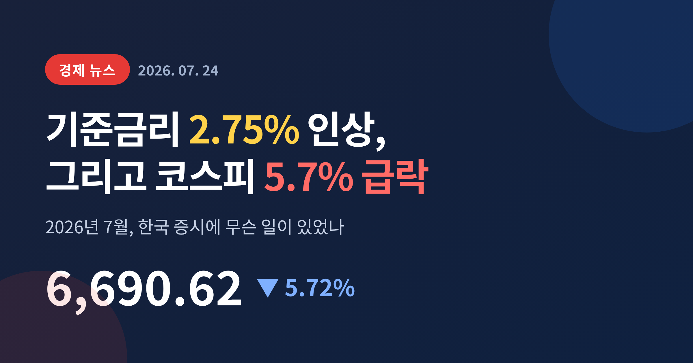
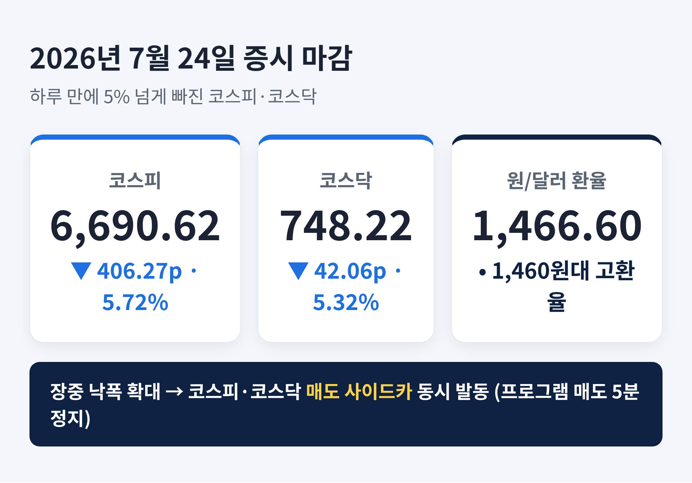
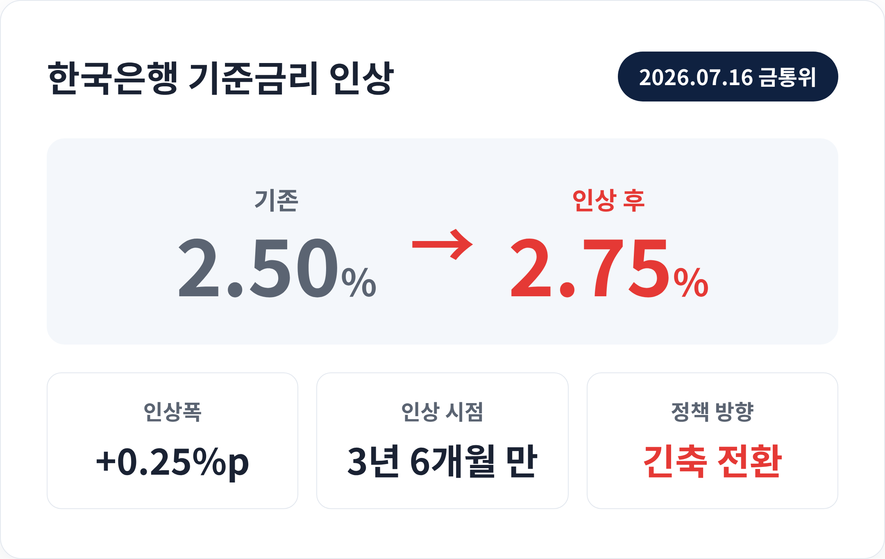
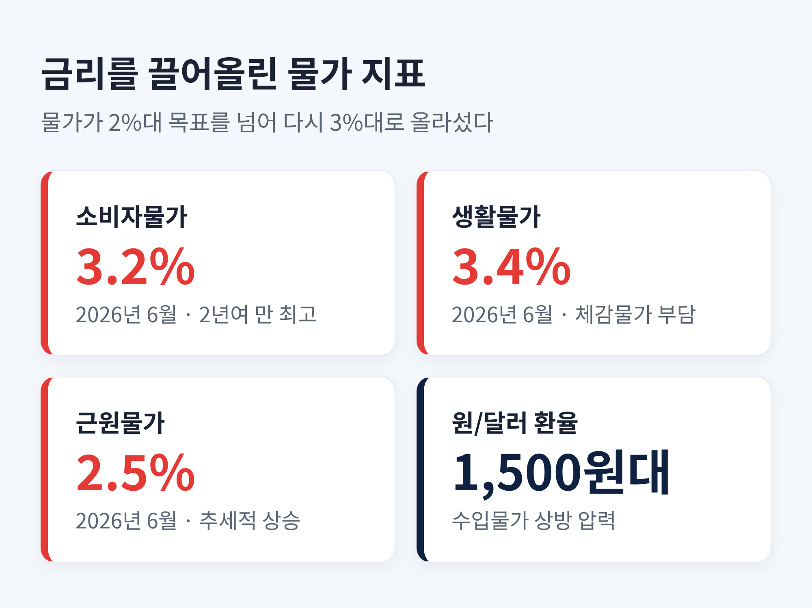
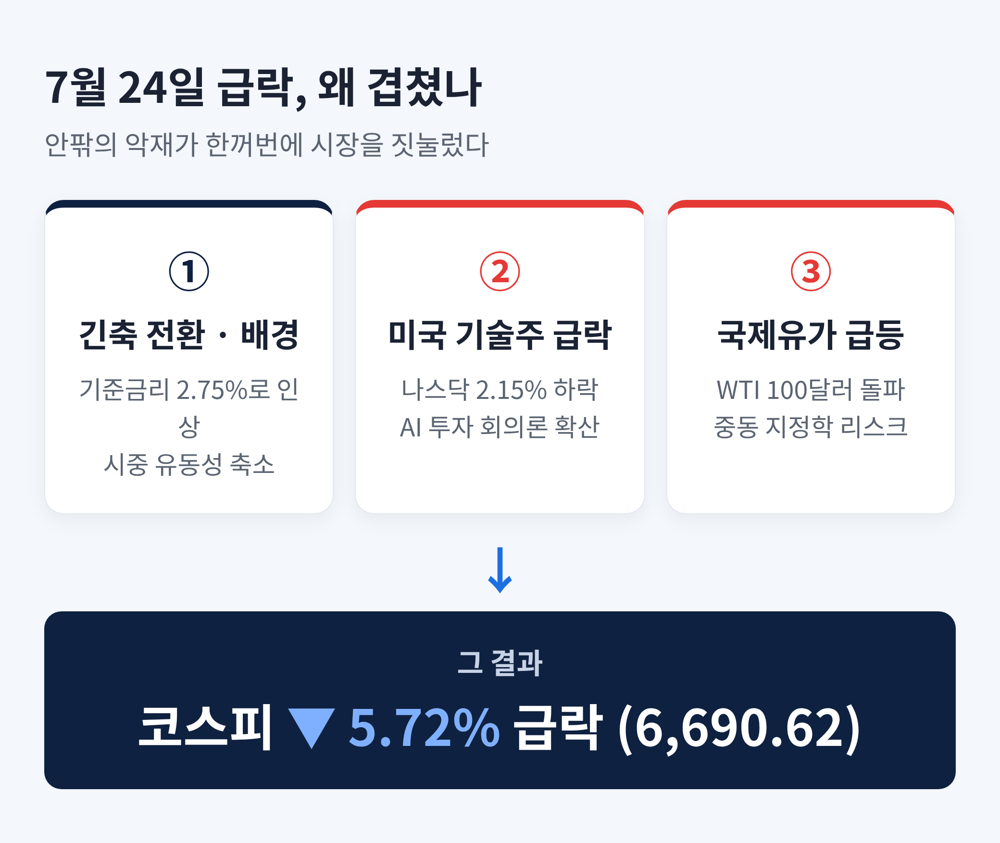
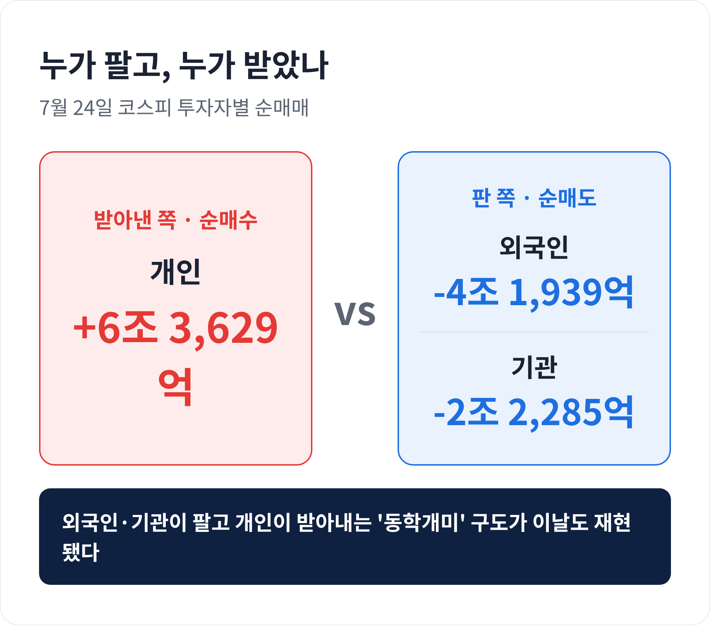

2026년 7월, 한국 금융시장이 크게 흔들렸습니다.
한국은행이 3년 반 만에 기준금리를 올렸고, 며칠 뒤 코스피는 하루에 5.7% 넘게 주저앉았습니다.
이번 글에서는 그 사이에 무슨 일이 있었는지, 수치와 맥락을 함께 정리해 보겠습니다.
세 줄 요약
7월 24일 국내 증시는 개장부터 무너졌습니다.
코스피는 전 거래일보다 406.27포인트, 비율로는 5.72% 내린 6,690.62에 장을 마쳤습니다.
코스닥도 42.06포인트(5.32%) 빠진 748.22로 마감했습니다.
낙폭이 커지자 오전 중 두 시장 모두 매도 사이드카가 발동됐습니다.
프로그램 매도 주문의 효력을 5분간 멈추는 조치입니다.
코스피는 오전 11시 23분, 코스닥은 11시 47분에 걸렸습니다.
원/달러 환율은 오후 3시 30분 기준 1,466.60원이었습니다.
이날만 보면 전날보다 0.2원 내려 소폭 하락한 셈입니다.
다만 6~7월 내내 1,500원 안팎을 오가던 고환율 국면은 그대로였습니다.

시계를 일주일 앞으로 돌려보겠습니다.
7월 16일, 한국은행 금융통화위원회는 기준금리를 연 2.50%에서 2.75%로 0.25%포인트 올렸습니다.
신현송 한국은행 총재가 회의를 주재했습니다.
이 결정이 특별한 이유가 있습니다.
한국은행이 금리를 올린 건 3년 6개월 만입니다.
2023년 1월 3.25%에서 3.50%로 올린 뒤로는 계속 동결하거나 내리기만 했습니다.
예전엔 경기를 살리려 돈을 풀던 쪽이었습니다.
지금은 물가를 잡으려 돈을 죄는 쪽으로 방향을 틀었습니다.
통화정책의 큰 물줄기가 바뀐 것입니다.

한국은행이 동결 기조를 깬 배경에는 물가가 있습니다.
소비자물가 상승률은 목표치인 2.0%를 넘긴 지 오래였습니다.
5월에는 3.1%, 6월에는 3.2%를 기록했습니다.
2024년 3월 이후 처음으로 3%를 넘어선 수치입니다.
체감물가는 더 아팠습니다.
생활물가 상승률은 6월에 3.4%까지 뛰었습니다.
식료품과 에너지를 뺀 근원물가도 2.5%로 올라섰습니다.
여기에 수도권 집값이 다시 들썩였고, 가계대출도 불어났습니다.
'빚내서 투자한다'는 이른바 빚투 흐름도 부담이었습니다.
1,500원을 넘나드는 고환율은 수입 물가를 밀어 올렸습니다.
한국은행은 "물가 안정에 초점을 둔다"고 밝혔습니다.
그리고 결정문에서 금리 인상 기조를 이어갈 필요가 있다고 덧붙였습니다.
한 번으로 끝나지 않을 수 있다는 신호입니다.
한미 금리차도 고려 요인이었습니다.
이번 인상으로 한국 기준금리는 2.75%, 미국은 3.50~3.75%가 됐습니다.
상단을 기준으로 하면 격차가 1.00%포인트로, 종전보다 0.25%포인트 좁혀졌습니다.
금리차가 벌어지면 원화 약세와 자금 유출 압력이 커지는데, 그 부담을 조금이나마 덜어낸 셈입니다.

여기서 오해하기 쉬운 지점이 있습니다.
7월 24일 급락을 곧바로 금리 인상 탓으로만 보긴 어렵습니다.
그날 시장을 끌어내린 직접적인 방아쇠는 바깥에서 왔습니다.
전날 미국 증시에서 기술주가 급락했습니다.
나스닥은 2.15% 내렸고, 이른바 '매그니피센트 7'의 시가총액이 하루 만에 약 8,000억 달러 가까이 증발했습니다.
AI 투자가 과열된 것 아니냐는 회의론이 번졌습니다.
국제유가도 불을 지폈습니다.
중동 지정학 리스크가 다시 커지며 WTI 유가가 배럴당 100달러를 넘어섰습니다.
유가 상승은 물가와 기업 비용에 모두 부담을 줍니다.
우리 시장에서는 반도체 대장주가 직격탄을 맞았습니다.
삼성전자는 7.59%, SK하이닉스는 8.34% 내렸습니다.
현대차(-7.18%)와 LG에너지솔루션(-5.32%)도 약세였습니다.
반면 삼성바이오로직스는 10.08% 올라 방어주로 주목받았습니다.
결국 이렇게 정리할 수 있습니다.
금리 인상이 유동성을 죄어 둔 '마른 장작'이었다면, 미국발 악재와 유가 급등은 거기에 떨어진 '불씨'였습니다.

이날 수급을 보면 시장의 속내가 드러납니다.
코스피에서 외국인은 4조1,939억 원, 기관은 2조2,285억 원어치를 팔았습니다.
그 물량을 개인이 6조3,629억 원어치 사들였습니다.
파는 쪽은 외국인과 기관, 받아내는 쪽은 개인이었습니다.
이런 구도가 새롭지는 않습니다.
외국인이 빠져나갈 때 개인이 저가 매수로 맞서는 장면은 그동안에도 반복됐습니다.
문제는 방향입니다.
개인의 매수가 반등의 발판이 될지, 손실만 키울지는 아직 알 수 없습니다.

시장의 전망은 한쪽으로 모이지 않았습니다.
낙관 쪽에서는 단기 과매도를 이야기합니다.
일부 증권사는 7월 말 재반등 국면에 들어설 수 있다고 봤습니다.
지수가 짧은 시간에 많이 빠진 만큼, 저가 매수 기회라는 해석입니다.
신중론도 만만치 않습니다.
한국은행이 긴축 사이클로 접어들었고, 연내 추가 인상 가능성까지 열어뒀습니다.
미국의 관세 압박과 중동 리스크 같은 대외 변수도 여전합니다.
변동성이 길어질 수 있다는 우려입니다.
분명한 사실은 하나입니다.
돈을 푸는 시대가 저물고, 돈을 죄는 시대가 열렸다는 점입니다.
금리가 오르면 예금·대출·주식·부동산의 셈법이 모두 달라집니다.
가계로 좁혀 보면 체감은 더 뚜렷합니다.
변동금리 대출을 쓰는 가구는 이자 부담이 늘어납니다.
반대로 예금·적금의 금리는 오를 여지가 생깁니다.
빚을 내 투자한 이른바 빚투 포지션은 조달 비용이 커진 만큼 더 신중해질 수밖에 없습니다.
같은 뉴스라도 대출자와 예금자가 받아들이는 무게는 이렇게 다릅니다.
정리하면 이렇습니다.
7월의 한국 시장은 안에서는 물가와 금리, 밖에서는 기술주와 유가라는 파도를 동시에 맞았습니다.
그 결과가 하루 5.7% 급락이라는 숫자로 남았습니다.
"긴축의 계절에는, 좋은 뉴스만 골라 들을 여유가 없습니다."
숫자 하나하나에 놀라기보다, 그 숫자가 가리키는 흐름을 읽는 눈이 필요한 때입니다.
※ 이 글은 공개된 언론 보도와 공식 발표를 바탕으로 사실관계를 정리한 정보성 콘텐츠입니다. 특정 종목이나 자산의 매매를 권유하기 위한 글이 아니며, 투자 판단과 그 결과에 대한 책임은 투자자 본인에게 있습니다. 투자 권유가 아닙니다.